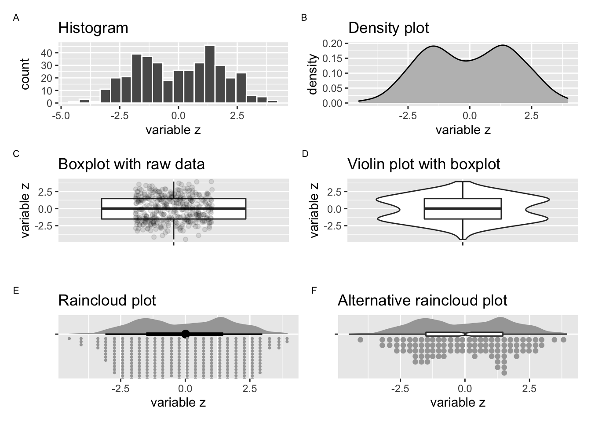
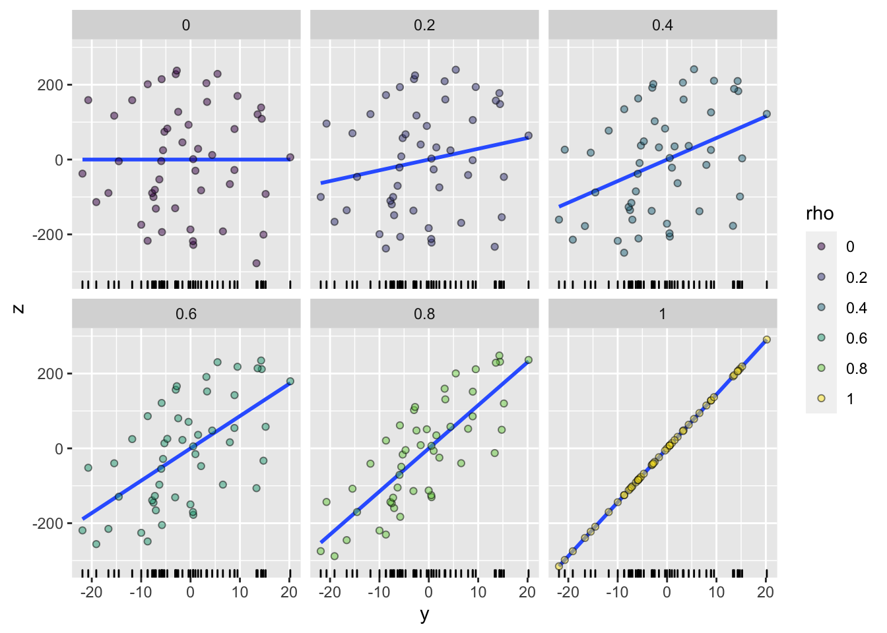
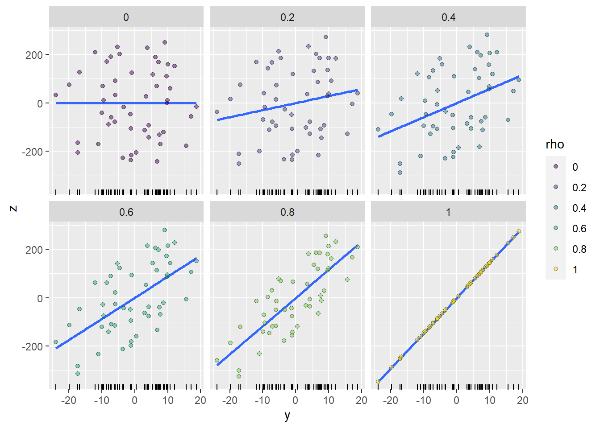
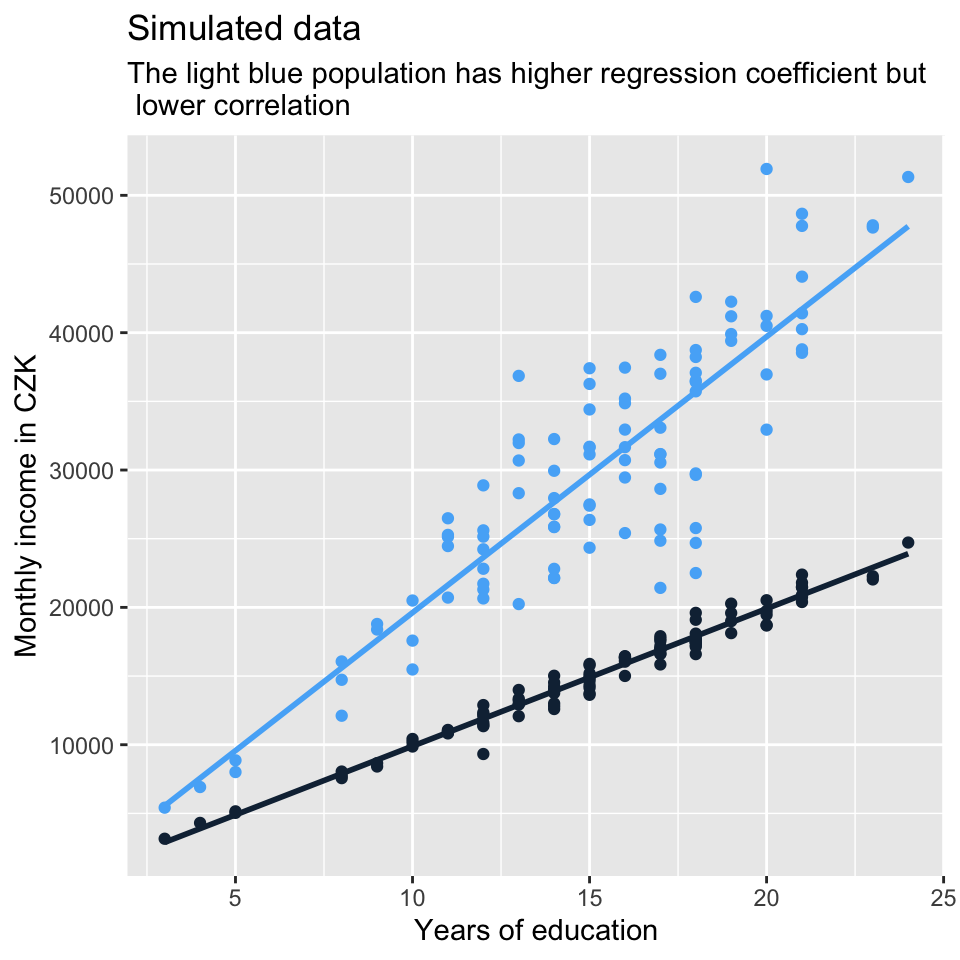

Quick recap on selected concepts in statistics
We encourage you to read through the following selected statistical concepts before taking the course. You can think of these concepts as informal prerequisite for taking the course. On purpose, we do not explain all the terms we use here, because you are already expected to know them on entering the course. If you are mostly familiar with what you read here, and perhaps only need to refresh on some details, chances are you are prepared to take the course. If not, consider taking some introduction to statistics first. For our students, Statistics I and Statistics II are prerequisites for this course.
Variable and its distribution
A variable is an attribute, which can take different values. E.g. height is a variable as different people can have different height. So is an opinion about something.
For a variable with known values, we can construct its distribution. Frequency distribution uses actual counts (it provides information such as that there are five people with height between 150 and 155 cm in a given group of 50 people). Probability distribution gives probabilities of occurrence of different possible values (e.g. the probability of having height between 150 and 155 cm is 10% etc.).
Below, there are some commonly used plot types which help understand distribution of a variable visually.

Plot A is a histogram displaying frequency distribution. Histograms use bins to categorize continuous variables. As a result, they are closely related to column charts.1
Plot B uses probability density function to display probability distribution. While we cannot directly read number of occurrences for each value of variable z, we can perceive the relative likelihood of each value of z. ^[Beware, density plot is sometimes recommended as a solution to the arbitrariness of number of bins in histogram, but it actually suffers from the same problem - the final appearance depends on a smoothing parameter, so the same data can also produce multiple differently looking density plots. However, the default tends to give a useful result.)
Plot C is a boxplot. It is constructed from selected distribution statistics (the 1st, 2nd, and 3rd quartile).
Plot D is called a violin plot and it is a handy combination of the boxplot with and the density plot (notice the density plot from B is simply turned by 90 degrees and mirrored on both sides of the boxplot). Violin plots enable to explicitly plot key values (the median and the interquartile range) while remaining sensitive to distributional pecularities (such as bimodality in this example).
Variance and mean
Variability within a variable can either be expressed visually (plots above), or it can be expressed with a numeric value, typically the variance or its derivative, the standard deviation.
Variance of the variable z is the expected value of the squared deviation from its mean, we use the following formula:
\[ var(z) = E[(z_i-\mu_z)^2] = \frac{\sum (z_i - \bar{z})^2}{n} \]
We typically work with the standard deviation (variance transformed by taking its square root) rather than the variance because standard deviation is on the original scale of the variable distribution. The formula is as follows:
\[ \sigma_z = \sqrt{var{(z)}} \]
We also use point estimates to simplify a variable. A typical example is the arithmetic mean.
We refer to the arithmetic mean of variable z as E(z) generally, or μz to refer specifically to population mean or \(\overline{x}\) to refer to sample mean.
Sampling distribution
Imagine you collect a survey sample from a population. It is only one of many and many theoretical samples you could have collected (e.g, there are many ways you can sample 1000 people from the Czech population). It follows that when you use the sample to calculate some values (mean of a variable, variance of a variable, … regression coefficient for a specified model), these are not the only possible values. In fact, each of these values is just one data point from a theoretical distribution of all the different estimates you could obtain from all the possible samples. This theoretical distribution is called sampling distribution.
“The sampling distribution is the set of possible datasets that could have been observed if the data collection process had been re-done, …” (Gelman et al., 2020, p. 50)
Obviously, we usually only have one sample, hence one data point from the sampling distribution. In other words, we have no variation in our estimates, e.g., we only have one sample mean available. But we have variation in the data and that is what we use to estimate (or conceptualize) the expected variation in the estimates. (For regression coefficients, this is where assumptions are important, we will talk about it in future lectures.)
Standard deviation of the sampling distribution (i.e., of the distribution of an estimate) is called standard error and it is estimated as \(\frac{\sigma}{\sqrt n}\).
Confidence intervals are an extension of standard errors. When we can approximate the sampling distribution to normal distribution, the 95 % confidence intervals are constructed by subtracting/adding ca 2 standard errors to the point estimate, see picture below (beta-hat is the estimate of the regression coefficient beta from the data).

Source: (Gelman et al., 2020, p. 51)
Note that the sampling distribution is not technically normal. It is Student’s t-distribution (or just t-distribution) which will only converge to normal when the number of observations is large enough, ca 30 and more. For smaller N, the approximation of 2 standard errors for constructing 95% confidence interval may be too much of a simplification (so much so as to be incorrect for practical applications).
Statistical significance and hypothesis testing
Conventional wisdom says: statistical significance is p-value less than 0.05, relative to some null hypothesis (hypothesis of no difference). Fair enough, but remember that the 0.05 value is arbitrary.
“[p-value is] the probability under a specified statistical model that a statistical summary of the data (e.g., the sample mean difference between two compared groups) would be equal to or more extreme than its observed value” (Wasserstein & Lazar, 2016)
Intuition behind statistical significance: an estimate is said to be NOT statistically significant if the observed value could reasonably be explained by chance.
This thinking arises from a still dominant yet increasingly criticized approach of so called null-hypothesis testing (NHT):
- null hypothesis: estimate = 0
- alternative hypothesis: estimate != 0
Critique of NHT
- NH is unrealistic in social sciences where everything is linked to everything (only a matter of sample size, with enough data, almost everything gets statistically significant)
- NH is theoretically uninteresting (effect size and variations of effect sizes in different groups is what really matters, not the unambitious claim that some difference exists)
- NH is a very low threshold for any analysis, because non-rejection tells us that there is not even enough information in the data to move beyond the banal null hypothesis of no difference.
- Even statistically non-significant data can carry important information (e.g., for meta-analysis or updating our priors in Bayesian approach).
Despite this critique, many believe that NHT can still be useful to set some shared threshold in a discipline, especially when we tend to use similar sample sizes. But it has tobe used correctly. Often, it is not, see below.
Critique of malpractice in using p-value
- p-value is often used as a license for making a claim of a scientific finding (or implied truth) while neglecting many other important considerations (“design of a study, the quality of the measurements, the external evidence for the phenomenon under study, and the validity of assumptions that underlie the data analysis.” (Wasserstein & Lazar, 2016)
- p-value is often used incorrectly (significance chasing a.k.a. p-hacking): (1) multiple statistical tests, (2) choice of data to be presented based on statistical-significance result.
- p-value is often interpreted incorrectly (such as when non-significant p-value is considered evidence for no difference). Please, be sure you understand why this is a problem. Feel free to ask about this in the class, but it is important that you understand.
- There is (usually almost) no difference between 5.1% and 4.9% significance level.
Examining relationship between variables
In social sciences, we often want to know how two variables are associated, i.e., how they vary together (co-vary).
A basic measure of association is called covariance. Many measures of association draw on it one way or another. It is very closely related to variance. Inspect the the formulas below to see for yourself:
\[ var(x) = E[(x_i - \mu_x)^2] = E[(x_i - \mu_x)*(x_i - \mu_x)] = \\ \frac{\sum[(x_i - \mu_x)*(x_z-\mu_x)]}{n} \]
\[ cov(x) =E[(x_i - \mu_x)*(y_i - \mu_y)] = \\ \frac{\sum[(x_i - \mu_x)*(y_i-\mu_y)]}{n} \]
The value of covariance is rarely useful as the end product. Just like we prefer standard deviation as a scaled form of variance, we prefer correlation as scaled form of covariance. While standard deviation is scaled to the scale of the original variable, correlation is scaled to take a value between -1 and 1. In this sense, correlation is standardized covariance and measures strength of association.
If you square Pearson correlation coefficient between two variables, you get the proportion of variance in one variable which can be predicted by knowledge of the value for the other variable. This relationship is symmetrical (if x explains 20% of variation in y, then y explains 20% of variation in x). When you think about it, this means that we should not understand correlation coefficient as linear in the sense that increase of correlation coefficient by 0.1 always represent the same increase in the strength of association. If the coefficient is 0.2, we can explain only 0.04, i.e., 4% of variance in x by knowing the value of y. If the coefficient is 0.3, it is 9%. If the coefficient is 0.4, it is 16%. So moving from 0.2 to 0.3 means 5 percentage point decrease of unexplained variance, whereas moving from 0.3 to 0.4 means 7 percentage point decrease of unexplained variance. And so on.
Visual representation of different values of Pearson correlation coefficient puts things into perspective:

Code by whuber from: https://stats.stackexchange.com/questions/15011/generate-a-random-variable-with-a-defined-correlation-to-an-existing-variables
Correlation coefficients and regression coefficients (which will be covered in the course) are conceptually a different thing. While correlation coefficient shows the strength of association, regression coefficient shows how, on average, the value of y changes when the value of x changes by one unit (we will talk about this more). The fact that the regression lines in the set of plots above get steeper and steeper as the correlation gets stronger results from the data generation process. But it is no necessity. There can be steeper regression lines between less correlated variables and vice versa. See another set of simulated data below which demonstrates it.

The four plots below show that the message sent out by visualization of a relationship between two variables can differ based on the tools we use. The plots below all visualize association between the same two continuous variables. Plotting just the regression line or just the points can send out a fairly different message about the association. Combination of the two seems more appropriate in this particular situation. Also remember that using straight line is not the only way to model association between two variables. In this case, we let the line in model D follow the data more closely (the line bends a little). However, the departure from straight line is so minor that straight line actually does seem a good approximation in this example.
Similarly, the message sent out by visualization can be strongly influenced by plotting decisions (or defaults) which have no relation to the data. See below two plots of the same relationship, but plotted with different width and y scale limits. Greater width makes the slope of the line seem less steep. Looser y scale limits (70 to 90 as opposed to 74 to 82 further strengthen this effect).

References
While not our concern here, the impression from a histogram can be strongly influenced by the number of bins.↩︎